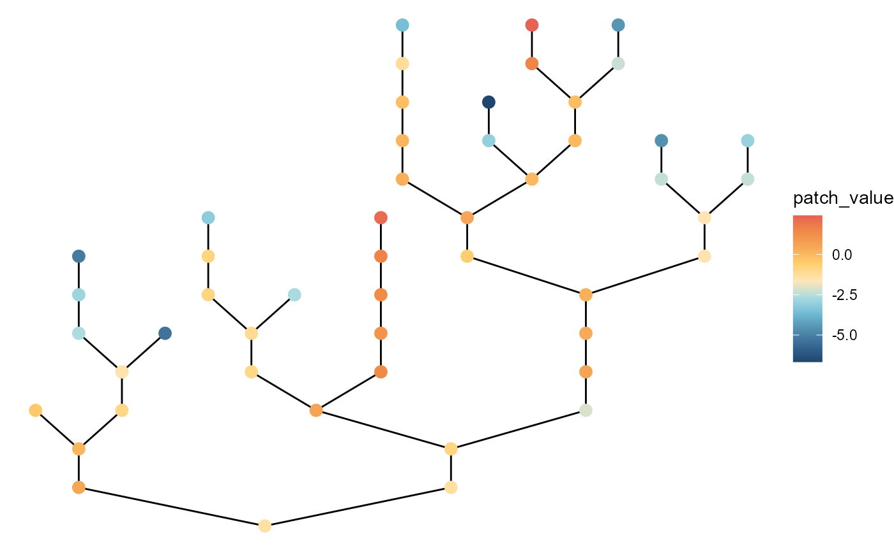

Basic usage
brnet() generates a random branching network with the
specified number of patches and the probability of branching. The key
arguments are the number of habitat patches (n_patch) and
the probability of branching (p_branch), which users must
specify. With these parameters, the function generates a branching
network through the following steps:
Draw the number of branches in the network. An individual branch is defined as a series of connected patches from one confluence (or outlet) to the next confluence upstream (or upstream terminal). The number of branches in a network \(N_{b}\) is drawn from a binomial distribution as \(N_{b} \sim Binomial(N,P_{b})\), where \(N\) is the number of patches and \(P_b\) is the branching probability.
Draw the number of patches in each branch. The number of patches in branch \(q\), \(n_q\), is drawn from a geometric distribution as \(n_{q} \sim Ge(P_b)\) but conditional on \(\sum_{q}^{N_{b}} n_q = N\).
Organize branches into a bifurcating branching network.
The function returns:
adjacency_matrix: adjacency matrix.distance_matrix: distance matrix. Distance between patches is measured as the number of steps required to reach from the focal patch to the target patch through the network.-
df_patch: data frame (dplyr::tibble) containing patch attributes.- patch_id: patch ID.
- branch_id: branch ID.
- environment: environmental value at each patch (see below for details)
- disturbance: disturbance level (i.e., proportional mortality) at each patch (see below for details)
- n_patch_upstream: the number of upstream contributing patches (including the focal patch itself; akin to the watershed area in river networks).
Quick start
The following script produce a branching network with
n_patch = 50 and p_branch = 0.5. By default,
brnet visualizes the generated network using functions in R
packages igraph and ggraph
(plot = FALSE to disable):
net <- brnet(n_patch = 50, p_branch = 0.5)
By default, patches are colored based on environmental values.
To view matrices, type the following script:
# adjacency matrix
# showing 5 patches for example
net$adjacency_matrix[1:5, 1:5]
#> [,1] [,2] [,3] [,4] [,5]
#> [1,] 0 0 0 0 0
#> [2,] 0 0 1 0 0
#> [3,] 0 1 0 0 0
#> [4,] 0 0 0 0 1
#> [5,] 0 0 0 1 0
# distance matrix
# showing 5 patches for example
net$distance_matrix[1:5, 1:5]
#> [,1] [,2] [,3] [,4] [,5]
#> [1,] 0 4 5 7 8
#> [2,] 4 0 1 7 8
#> [3,] 5 1 0 8 9
#> [4,] 7 7 8 0 1
#> [5,] 8 8 9 1 0The following script shows patch ID, branch ID, environmental values, disturbance values, and the number of upstream contributing patches for each patch:
net$df_patch
#> # A tibble: 50 x 5
#> patch_id branch_id environment disturbance n_patch_upstream
#> <int> <dbl> <dbl> <dbl> <dbl>
#> 1 1 1 -1.33 0.861 50
#> 2 2 10 -1.13 0.967 6
#> 3 3 10 -1.05 0.970 5
#> 4 4 7 -0.833 0.831 16
#> 5 5 7 -0.665 0.848 15
#> 6 6 13 -0.890 0.712 5
#> 7 7 13 -0.938 0.705 4
#> 8 8 13 -0.967 0.727 3
#> 9 9 13 -1.06 0.738 2
#> 10 10 13 -1.18 0.728 1
#> # ... with 40 more rowsCustomize: visualization
Arguments: patch_label,
patch_size
Users may add patch labels using the argument
patch_label:
# patch ID
net <- brnet(n_patch = 50, p_branch = 0.5, patch_label = "patch")
# branch ID
net <- brnet(n_patch = 50, p_branch = 0.5, patch_label = "branch")
# number of upstream contributing patches
net <- brnet(n_patch = 50, p_branch = 0.5, patch_label = "n_upstream")
To change patch size, specify patch_size:
# number of upstream contributing patches
net <- brnet(n_patch = 50, p_branch = 0.5, patch_size = 1)
Customize: environment
Arguments: mean_env_source,
sd_env_source, rho,
sd_env_lon
Environmental values are generated as detailed below:
Environmental values for upstream terminal patches are drawn from a normal distribution as \(z_h \sim N(\mu_{h}, \sigma_h^2)\) (arguments
mean_env_sourceandsd_env_source).Downstream environmental values are determined by an autoregressive process as \(z_{down} \sim N(\rho z_{up}, \sigma_l^2)\) (argument
sd_env_lon). At bifurcation patches (or confluence), the environmental value takes a weighted mean of the two contributing patches given the size of these patches \(N_{up}\) (the number of upstream contributing patches): \(z_{down} = \omega(\rho z_{up, 1} + \epsilon_1) + (1 - \omega)(\rho z_{up,2} + \epsilon_2)\), where \(\omega = \frac{N_{up,1}}{N_{up,1} + N_{up,2}}\) and \(\epsilon \sim N(0, \sigma_l^2)\).
Users may change the values of \(\mu_h\) (default:
mean_env_source = 0), \(\sigma_h\)
(sd_env_source = 1), \(\rho\) (rho = 1), and \(\sigma_l\) (sd_env_lon = 0.1).
Increasing the value of sd_env_source leads to greater
variation in environmental values at upstream terminals. The argument
rho determines the strength of longitudinal autocorrelation
(the greater the stronger autocorrelation). The argument
sd_env_lon determines the strength of longitudinal
environmental noise.
# with large variation at headwaters
net <- brnet(n_patch = 50,
p_branch = 0.5,
sd_env_source = 3,
sd_env_lon = 0.5,
rho = 0.5)
# with large local variation with no headwater variation
net <- brnet(n_patch = 50,
p_branch = 0.5,
sd_env_source = 0,
sd_env_lon = 3,
rho = 0.5)
Customize: disturbance
Arguments: mean_disturb_source,
sd_disturb_source , sd_disturb_lon
Disturbance values are generated as detailed below:
Disturbance levels for upstream terminal patches (i.e., patches with no upstream patch) are drawn from a normal distribution in a logit scale as \(logit~m_h \sim N(logit~\mu_{m}, \sigma_{h,m}^2)\).
Disturbance cascades downstream as in environmental values: \(logit~m_{down} \sim N(logit~m_{up}, \sigma_{l,m}^2)\). At bifurcation patches (or confluence), the disturbance value takes a weighted mean of the two contributing patches given the stream size of these patches \(N_{up}\) (the number of upstream contributing patches): \(logit~m_{down} = \omega(logit~m_{up, 1} + \epsilon_1) + (1 - \omega)(logit~ m_{up,2} + \epsilon_2)\), where \(\omega = \frac{N_{up,1}}{N_{up,1} + N_{up,2}}\) and \(\epsilon \sim N(0, \sigma_{l,m}^2)\).
Users may change the values of \(\mu_{m}\)
(mean_disturb_source), \(\sigma_{h,m}\)
(sd_disturb_source) and \(\sigma_{l,m}\)(sd_disturb_lon).
# with large variation at headwaters
net <- brnet(n_patch = 50,
p_branch = 0.5,
sd_disturb_source = 3,
sd_disturb_lon = 0.5,
patch_color = "disturb")
# with large local variation with no headwater variation
net <- brnet(n_patch = 50,
p_branch = 0.5,
sd_disturb_source = 0,
sd_disturb_lon = 3,
patch_color = "disturb")